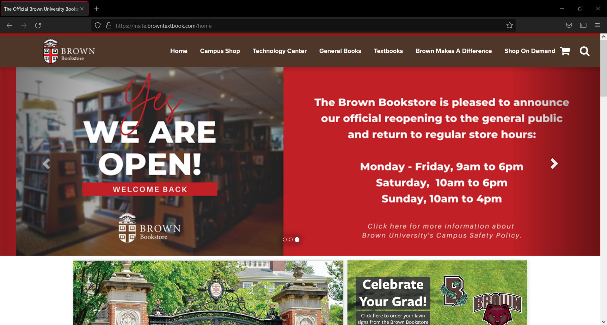

Home > Gallery > Brown Bookstore

Brown Bookstore
This is the first piece in my portfolio that actually allowed me to design the website from scratch. It's the closest thing I've had to a freelance project. Some images on the homepage have been updated since I last made changes, but the code is still mine.
My first interaction with Brown was a solo project for their bookstore. When I applied for a temporary contract at a hiring agency, I had no idea I would be working with an ivy league university. The Bookstore was very straightforward about what they wanted during my interview, and asked me upfront if I could do what they were describing. Their main idea was to mimic the current theme at the rest of Brown, which I now know to be specifically the Drupal 7 theme. They let me know I'd be working with a CMS called InSite, which is geared towards bookstores. I designed a few mockups to get my point across, and they liked it immediately, so I began coding during my first week there.
I quickly became familiar with Insite, which is very restrictive about its HTML tags, but my main issue in this design was actually lack of assets. I recall having to fight for logo permissions, and in the end, I believe it was still an edited image ripped directly from brown.edu. I was also not granted access to Brown's font licenses, and had to mimic Circular as best I could with Google Fonts. The rest of the images on the site were provided by the Bookstore's third party vendors. I even retrieved the color palette from the main site's source code. This didn't bother me much, though, as I viewed these limitations as an interesting challenge, and enjoyed finding solutions to each piece.
Another challenge I faced was figuring out ways to get around the restrictive nature of Insite in favor of my design. One example is the header, which took some major effort to force a width of 100% on. I believe I had to hack it by adding another div around everything, which extended the background across the entire screen. It's not pretty, but it doesn't break. (The bold text was not my choice.)
In order to bring in some functionality, I learned Bootstrap to get the carousel up and running, as well as add animations and accessibility to other areas. It added a lot more functionality than I ever could have on my own.
Looking back on my work today, the one thing I would change is the spacing between images. 10px is not enough white space, and it makes the website feel crowded. I don't recall if this was my own stylistic choice or a request from the Bookstore, but I would give it at least 25px today, and widen the body by a lot.